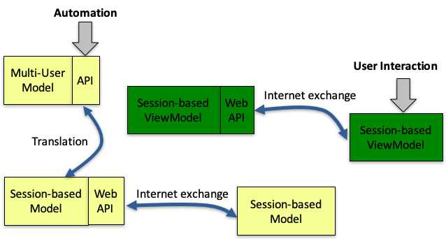
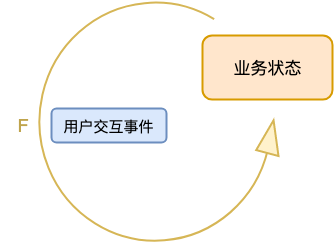
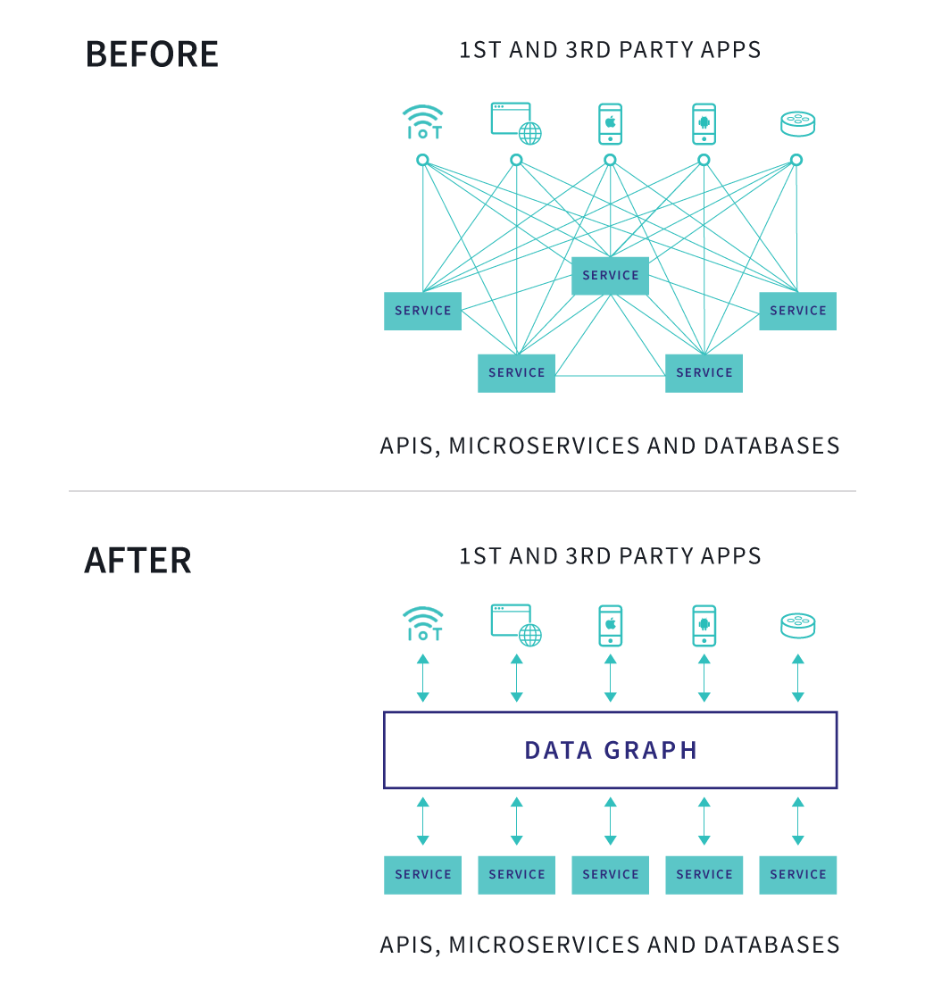

- 00 开篇词 怎样成长为优秀的软件架构师？.md.html
- 01 架构设计的宏观视角.md.html
- 02 大厦基石：无生有，有生万物.md.html
- 03 汇编：编程语言的诞生.md.html
- 04 编程语言的进化.md.html
- 05 思考题解读：如何实现可自我迭代的计算机？.md.html
- 06 操作系统进场.md.html
- 07 软件运行机制及内存管理.md.html
- 08 操作系统内核与编程接口.md.html
- 09 外存管理与文件系统.md.html
- 10 输入和输出设备：交互的演进.md.html
- 11 多任务：进程、线程与协程.md.html
- 12 进程内协同：同步、互斥与通讯.md.html
- 13 进程间的同步互斥、资源共享与通讯.md.html
- 14 IP 网络：连接世界的桥梁.md.html
- 15 可编程的互联网世界.md.html
- 16 安全管理：数字世界的守护.md.html
- 17 架构：需求分析 (上).md.html
- 18 架构：需求分析 (下) · 实战案例.md.html
- 19 基础平台篇：回顾与总结.md.html
- 20 桌面开发的宏观视角.md.html
- 21 图形界面程序的框架.md.html
- 22 桌面程序的架构建议.md.html
- 23 Web开发：浏览器、小程序与PWA.md.html
- 24 跨平台与 Web 开发的建议.md.html
- 25 桌面开发的未来.md.html
- 26 实战（一）：怎么设计一个“画图”程序？.md.html
- 27 实战（二）：怎么设计一个“画图”程序？.md.html
- 28 实战（三）：怎么设计一个“画图”程序？.md.html
- 29 实战（四）：怎么设计一个“画图”程序？.md.html
- 30 实战（五）：怎么设计一个“画图”程序？.md.html
- 31 辅助界面元素的架构设计.md.html
- 32 架构：系统的概要设计.md.html
- 33 桌面开发篇：回顾与总结.md.html
- 34 服务端开发的宏观视角.md.html
- 35 流量调度与负载均衡.md.html
- 36 业务状态与存储中间件.md.html
- 37 键值存储与数据库.md.html
- 38 文件系统与对象存储.md.html
- 39 存储与缓存.md.html
- 40 服务端的业务架构建议.md.html
- 41 实战（一）：“画图”程序后端实战.md.html
- 42 实战（二）：“画图”程序后端实战.md.html
- 43 实战（三）：“画图”程序后端实战.md.html
- 44 实战（四）：“画图”程序后端实战.md.html
- 45 架构：怎么做详细设计？.md.html
- 46 服务端开发篇：回顾与总结.md.html
- 47 服务治理的宏观视角.md.html
- 48 事务与工程：什么是工程师思维？.md.html
- 49 发布、升级与版本管理.md.html
- 50 日志、监控与报警.md.html
- 51 故障域与故障预案.md.html
- 52 故障排查与根因分析.md.html
- 53 过载保护与容量规划.md.html
- 54 业务的可支持性与持续运营.md.html
- 55 云计算、容器革命与服务端的未来.md.html
- 56 服务治理篇：回顾与总结.md.html
- 57 心性：架构师的修炼之道.md.html
- 58 如何判断架构设计的优劣？.md.html
- 59 少谈点框架，多谈点业务.md.html
- 60 架构分解：边界，不断重新审视边界.md.html
- 61 全局性功能的架构设计.md.html
- 62 重新认识开闭原则 (OCP).md.html
- 63 接口设计的准则.md.html
- 64 不断完善的架构范式.md.html
- 65 架构范式：文本处理.md.html
- 66 架构老化与重构.md.html
- 67 架构思维篇：回顾与总结.md.html
- 68 软件工程的宏观视角.md.html
- 69 团队的共识管理.md.html
- 70 怎么写设计文档？.md.html
- 71 如何阅读别人的代码？.md.html
- 72 发布单元与版本管理.md.html
- 73 软件质量管理：单元测试、持续构建与发布.md.html
- 74 开源、云服务与外包管理.md.html
- 75 软件版本迭代的规划.md.html
- 76 软件工程的未来.md.html
- 77 软件工程篇：回顾与总结.md.html
- 加餐 如何做HTTP服务的测试？.md.html
- 加餐 实战：“画图程序” 的整体架构.md.html
- 加餐 怎么保障发布的效率与质量？.md.html
- 热点观察 我看Facebook发币（上）：区块链、比特币与Libra币.md.html
- 热点观察 我看Facebook发币（下）：深入浅出理解 Libra 币.md.html
- 用户故事 站在更高的视角看架构.md.html
- 答疑解惑 想当架构师，我需要成为“全才”吗？.md.html
- 结束语 放下技术人的身段，用极限思维提升架构能力.md.html
- 课外阅读 从《孙子兵法》看底层的自然法则.md.html
- 捐赠
40 服务端的业务架构建议
你好，我是七牛云许式伟。
相比桌面程序而言，服务端程序依赖的基础软件不只是操作系统和编程语言，还多了两类：
- 负载均衡（Load Balance）；
- 数据库或其他形式的存储（DB/Storage）。

我们前面几讲已经介绍了负载均衡和常见的存储中间件。今天，让我们就把焦点放在上图中的业务架构上。
大方向来说，业务架构必然是领域性的，与你所从事的行业息息相关。但就如同桌面程序会有自己的架构体系的套路一样，服务端的业务架构也会有自己的套路。
在第二章 “[24 | 跨平台与 Web 开发的建议]” 这一讲中，我们概要地画过服务端的体系架构，如下图所示。

在图中，我们把服务端分成了两层。底层是 Multi-User Model 层，一般情况下它对外提供了一套 RESTful API 接口。上层是 Web 层，对外提供 Web API。Web 层又分为 Session-based Model 层和 Session-based ViewModel 层。
一般来说，Session-based Model 是一个非常简单的转译层。而在胖前端的模式下，Session-based ViewModel 层也几乎没有任何后端的代码，就是一些托管的资源文件，包含一些 HTML + CSS + JavaScript 文件。
我个人会倾向于认为，Session-based ViewModel 层属于桌面开发的范畴，哪怕是胖后端的模式下也会这样去归类。只不过在胖后端的方式下，桌面程序的很多逻辑不再是由 JavaScript 完成，而是由类似 PHP 之类的语言完成。
故此，我们今天探讨的业务架构，主要谈的是 Multi-User Model 层。
网络协议
探讨 Multi-User Model 层，第一个重要话题是网络协议，它是服务端程序的使用界面（接口）。考虑到这一层网络协议往往提供的是 RESTful API，所以有时它也会被称为 RESTful API 层。
大家可能经常听到 RESTful，但它到底代表什么？
所谓 RESTful，是指符合 REST 原则。REST 的全称是 “Representational State Transfer”。它强调的是：
第一，客户端和服务器之间的交互在请求之间是 “无状态” 的。这里的无状态更严谨的说法是 “无会话（Session）” 的，从客户端到服务器的每个请求，都必须包含理解请求所必需的完整信息。服务器可以在请求之间的任何时间点重启，客户端不会得到通知。
在 “[36 | 业务状态与存储中间件]” 这一讲中，我们把桌面程序和服务端程序都看作一个状态机。桌面程序的状态转化由 “用户交互事件” 所驱动，如下图。

而服务端程序的状态转化由 “网络 API 请求” 所驱动，如下图。

但是从状态转化角度来说，桌面程序和服务端程序很不一样。桌面程序的状态转化往往存在中间的 “临时状态”，这其实也是 Controller 层的价值所在。
在桌面程序的 MVC 架构中，Model 层提供核心业务，它不存在 “临时状态”，每一个对外提供的接口（API）都完成一项完整的业务。View 层提供呈现，和我们的话题关联不大，这里不展开来讲。Controller 层负责把 “用户交互事件” 翻译成 Model 层的业务 API。在 Controller 层往往存在 “临时状态” 的，它需要把多个连续的 “用户交互事件” 组装起来完成一项业务。我们第二章实战的 “画图” 程序，它的各类 Controllers，比如 FreePathCreator、RectCreator 等等，都是很好的例子。
服务端程序的状态转化，并不存在 “临时状态”。也就是说，它是 “无会话（Session）” 的，每个 “网络 API 请求” 都包含了实现一个业务的完整参数。
而这，正是 REST 原则所强调的。
这也是我们把服务端程序看作是 Model 层的原因。如果存在会话（Session），这就意味着服务端也需要实现 Controllers，这样就太糟糕了。
REST 原则第二个强调的点，是统一的表现规范，也就是 Representational 一词传递的意思。它认为，所有网络 API 请求都应该统一抽象为对某种资源 URI 的 GET、PUT、POST、DELETE 操作。
由于 RESTful API 简单明了，易于理解和实施，今天已经基本成为事实上的网络 API 的定义规范。
当然，RESTful API 显然并不是唯一选择。比如，基于 XML 的有 SOAP（简易对象访问协议）、WSDL（Web 服务描述语言）等。
还有一些人会觉得基于文本协议效率不够好，所以用二进制的协议。比如，Facebook 早年搞了个 thrift，不过 Facebook 自己应该不怎么用了。而 Google 也搞了个 protobuf 协议，并且基于 protobuf 搞了一个 grpc 框架。
还有一个选择是 GraphQL，它推崇企业在有多个业务的时候，不要发布很多套 RESTful API，而是基于一个统一的数据图，并通过 GraphQL 协议暴露给开发者。

目前来看，GraphQL 理念虽然先进，但是概念复杂，并不易于掌握，现在仍然处于不温不火状态。知乎甚至有一帖讨论 GraphQL 为何没有火起来?
这么多选择，应该怎么选？
我的答案大家已经知道了，我个人还是倾向于 RESTful API。虽然 GraphQL 值得关注，但是目前来看，它的投入产出比还远没有达到让人放弃简洁的 RESTful API 的地步。
至于二进制协议，虽然理论上效率更高，但是考虑到 HTTP 协议的江湖地位，各路豪杰纷纷贡献自己的智慧，提供支撑工具和效率优化，它实际的效率并不低。
只有 HTTP 协议，才有被广泛采纳的专门的应用层网关，比如 nginx 和 apache。这一点千万不要忘记。
就拿 Google 的 grpc 来说，它其实也是基于 HTTP 协议的，只不过它更推荐 HTTP 2.0，因为效率已经经过高度的优化。所以虽然 protobuf 是二进制的，但它取代的不是 HTTP 协议，而是 json、xml 或 Web 表单（form）。
这可能也是 protobuf 还很活跃，而 thrift 已经半死不活的原因。凡是想对 HTTP 协议取而代之的，都会挂掉。
一旦确定我们要用 RESTful API，还是用 protobuf，剩下的就是如何定义具体的业务 API 了。这块是具体的领域相关内容，这里先略过。
授权（Authorization）
确定好我们要选择什么样的网络协议，我们第二个要考虑的是授权（Authorization）。
当前，主流的授权方式有两种：一种是基于 Token，一种是基于 AK/SK。这两种授权方式的场景非常不同。
基于 AK/SK 的授权，多数发生在面向企业用户提供 API，也就是说提供的是一个 To B 的云服务。如果大家经常使用各类云计算服务，对 AK/SK 这类授权应该并不陌生。
AK/SK 授权的背后是数字签名。
我们强调一下，AK/SK 并不是公私钥。实际上 AK 是密钥提示（keyHint），SK 是数字签名的密钥（key）。
关于数字签名的原理，你可以回顾一下 “[16 | 安全管理：数字世界的守护]” 这一讲中的内容。
基于 Token 的授权，多数发生在面向终端用户的场景，也就是我要做一个 To C 的应用。
当前推荐的 Token 授权标准是 OAuth 2.0，它得到了广泛的支持，大家如果有在使用各类 C 端应用程序的开放接口，会发现他们往往都是基于 OAuth 2.0 的（有的还会同时支持 OAuth 1.x 版本）。
OAuth 2.0 的优势是对外提供 Open API，而不仅仅局限于自己的 App 用。OAuth 2.0 提供了一个很好的方式，能够让我们的客户不用向第三方应用去暴露自己的用户隐私（比如用户名和密码）的前提下，调用 API 来使用我们的服务。
所以总体来说，授权这块的选择是相对简单的。我们更多要考虑的，反而是如何构建业务无关的用户帐号体系和授权系统。它们隶属于通用的帐号与授权子系统，可以做到与业务无关。
后面在本章的实战案例中，我们会对这块内容进一步展开。
RPC 框架
明确了授权机制，确定了业务 API，那么下一步就是怎么实现的问题了。
如果业务 API 选择了基于 protobuf，那么 grpc 框架是个不错的选择。
对于 RESTful API，七牛云对外开源了一套非常精简的 restrpc 服务器框架，其 Github 主页为：
这个 restrpc 框架主要的特点有：
- URL 路由（URL Route）。支持用手工写 URL 路由表，也支持由 restrpc 框架自动实现路由。
- 参数的解析。可以支持 json、Web 表单（form）等格式的解释。对于其他格式对数据，可以由用户自己来解释。
- 返回值的序列化。默认序列化为 json，如果需要，用户也可自己做序列化。
- 授权（Authorization）。以开放框架的方式实现授权机制，以便用户可以选择自己的授权方式。
- 适度的开放机制。我们主要为了实现开放的授权机制而开放，但这个开放机制可以用来做各类扩展，而不只是局限于授权。
这里我们给了一个 restrpc 框架的使用样例：
为了简化，这个样例用的是一个 mock 的授权机制。这种 mock 授权非常适合用来做业务系统的单元测试。
这个样例我们采用由 restrpc 框架自动实现路由的方式。这样可以减少一些代码量，但是对路由 API 对应的实现方法的名字有要求，看起来不是那么美观。如果不喜欢可以采用手工路由方式。具体怎么做，后面我们的实战案例会有体现。
单元测试
另外，这个样例我们的单元测试采用了七牛开源的 httptest 框架。其 Github 主页为：
这个 httptest 框架，最核心的逻辑是如何在不用写业务 API 的 Client SDK 的情况下，能够保持业务友好的方式来写测试案例。
它不只可以做单元测试，也可以做集成测试。
你可以通过下面这个演讲稿来了解它的核心思想：
这个 httptest 框架是非常通用的，所以它没有内建任何公司特有的授权机制。在七牛，我们会基于更贴近七牛自身业务的 qiniutest 进行测试。qiniutest 工具只是在 httptest 基础上作了少量的扩展，其 Github 主页为：
你可以依葫芦画瓢，实现一个适合你们公司的授权机制下的 httptest 工具。
在本章的实战案例中，我们也会让大家看到如何基于 httptest 来进行业务的单元测试。
结语
我们总结一下今天的内容。
服务端业务架构，主要是怎么做一个多租户的 Model 层。Model 层本身最重要的是自然体现业务逻辑，它和具体的行业的领域问题相关，对此我们无法进一步展开。
但服务端程序还是有它很鲜明的特点。
今天我们重点讨论了服务端业务架构相关的通用问题。包括：网络协议、授权、RPC 框架、单元测试等等。
当然其实还有一个问题，就是选什么样的存储中间件。它和具体的业务特征更为相关，这一点在后面我们实战案例中再做探讨。
如果你对今天的内容有什么思考与解读，欢迎给我留言，我们一起讨论。我们服务端开发相关的内容就暂时告一段落，下一讲开始我们进入实战。结束实战后，我们会结合实战对服务端开发的架构做一个总结。然后我们进入服务端的另一半：如何做好服务的运维，甚至也会涉及少量的运营相关的话题。
如果你觉得有所收获，也欢迎把文章分享给你的朋友。感谢你的收听，我们下期再见。
© 2019 - 2023 Liangliang Lee. Powered by gin and hexo-theme-book.